Intersections of Poverty
Responding to claims that everyone should be treated ‘equal’
Overview
Today and next week, you are going to work through a series of exercises to get you acquainted with the visualization features in Tableau. You are going to produce a series of worksheets in Tableau that showcase the intersections of poverty and race/ethnicity/gender in the United States, using the 2021 American Community Census Supplemental Poverty Measure public use research extracts. Throughout this exercise, we will refer to the Supplemental Poverty Measure as SPM.
The primary goal of this exercise is not to memorize a series of Tableau features and workflows. We are going to cover a lot of ground today, and I do not expect you to remember everything. The primary goal is twofold - first, to give you a sense of the expansiveness of Tableau’s capabilities, and second, to give you practice problem-solving in Tableau by following reference material. In most sections of this exercise, I’m not going to explain to you exactly how to complete the step …but I am going to give you the resources that you need to figure it out. This is really important skill-building for this course and for data analysis in general.
The Counter-Claim
A common response to campaigns and policies focused on anti-racism and anti-sexism is this: “I believe everyone should be treated equally.” The suggestion is that everyone should have access to the same exact resources and opportunities. The problem with this rhetoric is that it ignores that different people start from different positions. We’ve learned this week that focusing on equity over equality ensures that everyone can achieve the same outcomes because resources and opportunities are directed to communities based on where they are at. As we consider equity-based approaches, it’s important to also recognize that disadvantages can be amplified at the intersections of certain social identities.
Refuting claims that prioritize equality over equity requires highlighting the disadvantages that groups at the intersection of certain social identities face. Overall, this lab will demonstrate what we can see when we compare data across the intersections of race, ethnicity, class, and gender that we can’t see when examining data along a single axis.
The Dataset
There are multiple standards that the U.S. federal government uses to assess poverty. The first and most common measure - the official poverty measure (OPM) - has been in use since the 1960s. This measure defines poverty by analyzing a family’s pre-tax income to a certain poverty threshold and adjusting for the size of the family. While this measure has a long history, many stakeholders were concerned that it paints an inadequate picture of poverty. With the support of the U.S. Bureau of Labor Statistics, the SPM was introduced in 2011 to factor in a number of other vectors that mark poverty - access to government programs like food stamps, federal and state taxes, work expenses, food expenses, and geographic location.
The data that you will see in this lab documents poverty in the U.S according to both measures. It was collected via the U.S. Census Bureau’s Current Population Survey Annual Social and Economic Supplements (CPS ASEC). Each row in the dataset is one surveyed person in a U.S. household, and there are columns to mark the person’s demographics (age, race, ethnicity, gender, marital status), the person’s poverty status, their household’s income and expenses, and the household’s access to various government subsidies. The CPS is directed to the U.S. civilian noninstitutional population, and thus excludes incarcerated individuals, individuals in nursing homes, and the homeless population.
It’s important to note that this is not a survey of every person in the U.S. There are a number of reasons why it would be difficult to survey everyone in the U.S - it’s expensive, it takes a lot of time, not everyone wants to be surveyed, among other reasons. Instead, a subset of the total population (or, in other words, a sample of households) are surveyed. …but there are reasons why this sample might not be representative of the whole U.S. even if respondents were selected randomly. Certain communities may be under-surveyed if they live in areas that are difficult to reach, if they tend to refuse participation, or if they are more likely to be unavailable for surveying. Sometimes, when we look at the demographics of those that actually participated in a survey, the distributions of age, race, gender, etc do not match those of the US. To account for this, the CPS assigns weights to each survey response. The weight represents the theoretical number of people that a survey response represents within the total population. So if one survey response was assigned a weight of 144, this indicates that the survey collectors estimate that this survey response represents about 144 people in the total population.
This is a really important concept, so if you had trouble following the paragraph above, check out this video for further explanation:
Instructions
Part 1: Getting Started
Open Tableau and create a New Workbook called spm_poverty_2021. Click the Connect to Data in the upper left hand corner of Tableau. Download this data file and load it into Tableau, using the Statistical File link on the Connect page. It may take a few moments to load. Open the data dictionary for this dataset here, and make sure you have it available to you throughout these exercises. Read through the data dictionary to acquaint yourself with the variables that might appear in this dataset.
In the data dictionary, you may notice that beneath field names, there are a list of numbers followed by a series of labels. For example, consider this section:
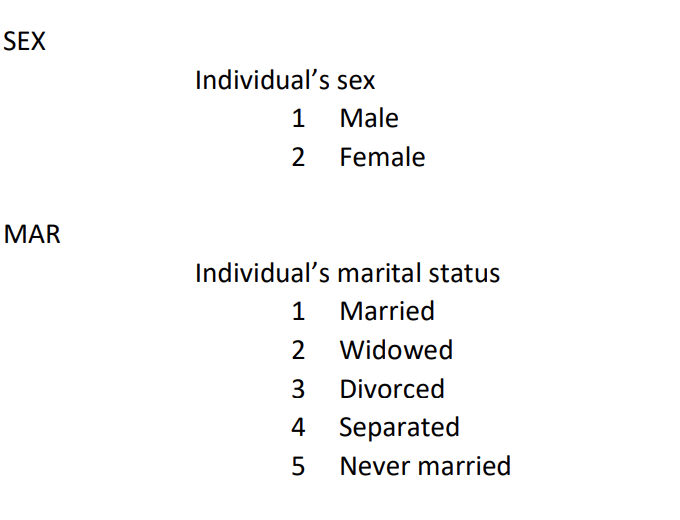
Under the SEX heading, the dictionary is indicating that whenever you see a 1 in the dataset under the SEX variable, it refers to Male, and whenever you see a 2 in the dataset under the SEX variable, it refers to a Female.
Create a new Sheet in your Tableau Workbook called ‘Poverty Counts - Official Poverty Measure’. Rename the worksheet tab at the bottom of the screen to some abbreviated version of this. (I called mine Off-Pov).
Understanding Pill Types
Variables are treated differently in Tableau depending on whether they are assumed to be Dimensions or Measures, and whether they are treated as Discrete or Continuous. Pill types impact what kinds of calculations we can perform, what kinds of plots we can create, and what kinds of formulas we can write.
Watch this video, which explains pill types further.
There are a number of categorical variables in this dataset that are incorrectly coded as Measures. This is because the dataset uses numbers as labels for the categorical variables (e.g. 1 refers to Male in the SEX variable). When Tableau imported our dataset, it defaulted to treating these variables as measures because it saw a series of numbers in the columns. …but we won’t ever add, average, or perform any other numerical calculations with the numbers in these columns because they are actually labels for categorical information, not measures.
Question
Based on what you learned in the last video, convert the following categorical variables in the dataset to Dimensions : Education, Hispanic, Mar, OFF Poor, Puma, Race, Sex, SPM Poor, SPM Ten MortStatus, SPM wCohabit, SPM wUI LT15, ST.
Managing Metadata
There are a whole lot of variables for us to parse through in this dataset, and it would be helpful if we had some way of further organizing them.
Watch this video, which explains how to manage metadata in Tableau.
Question
Create the following folders in your Worksheet:
- IDs
- Demographics
- Geography
- Housing Status
- Household Properties
- Income
- Expenses
- Financial Resources
Organize as many of the variables into these folders as you can.
Aliases
Go ahead and drag the OFF Poor variable onto the Rows field. You’ll notice a table appears, with 0 and 1 listed in the first column and empty text in the next column.
You’ll remember that you can look up the values corresponding to 0 and 1 in the OFF Poor variable in the Data Dictionary. To make compelling data visualizations, we likely want to swap out these numbers with their actual labels in the visualization. To do this, we can hover over the number 0 in the visualization, right click, and then click ‘Edit Alias’.
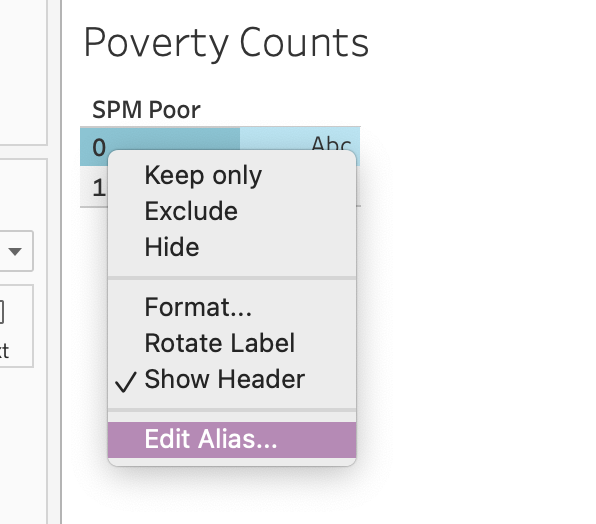
Then you can type the label name in the field that appears. This label will appear in place of 0 whenever you use this variable again.
Question
Edit the Aliases for both of the values in OFF Poor according to the labels from the Data Dictionary.
Part 2: Data Analysis
Working with Special Pill Types
Let’s say that we wanted to know the count of individuals in this dataset that were considered to be in poverty according to the OFF Poor variable. To do so, we want to count how many times 1 appeared in the dataset in this column, along with how many times 0 appeared in the dataset in this column. There is a special pill in the Measures section of Tableau that facilitates this. It’s the file name of your dataset followed by the word (Count).
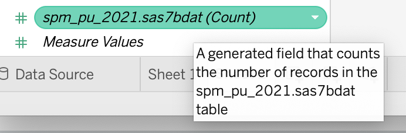
With OFF Poor still in the Rows field of your worksheet, drag spm_pu_2021.sas7bdat (Count) to the Label field. You’ll see a table that looks like this.
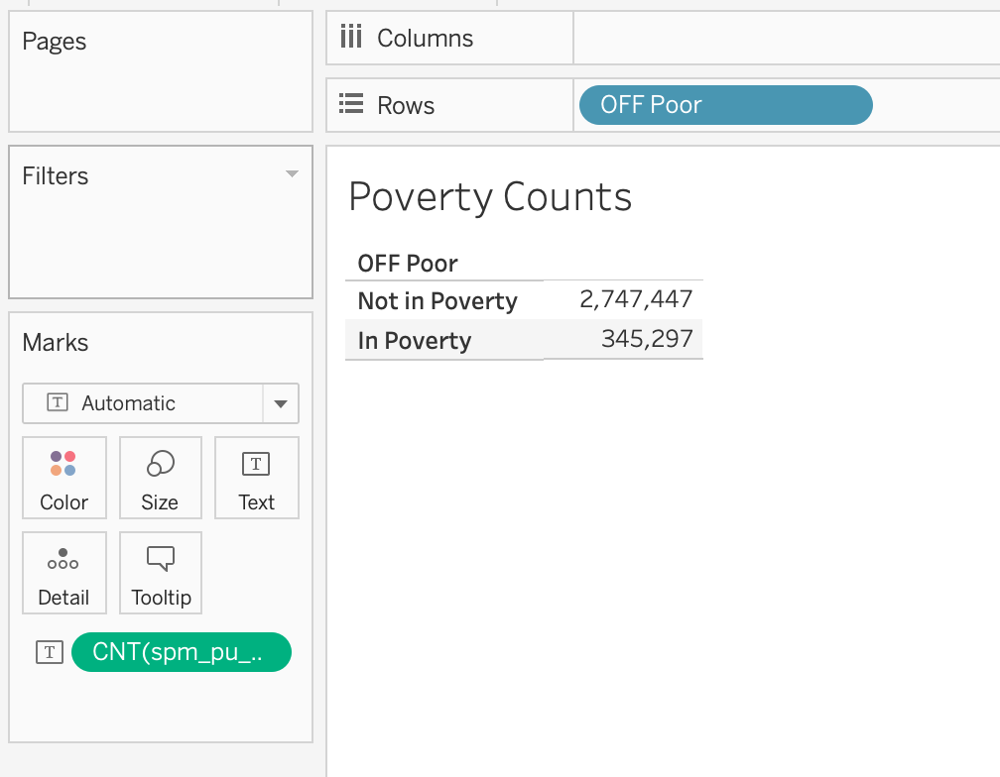
This indicates to us how many survey respondents in this dataset were classified as in poverty according to the official poverty measure. …but recall from above that this dataset is a sample not a total count of every person in the U.S. and that certain categories of people might be more represented than others. Certain communities may have been over-surveyed, and others might have been under-surveyed. Zooming out to the entire U.S., we can’t assume that this is a representative ratio of individuals in poverty. To address this, we will need to factor in the survey weights.
Drag the Wt pill to the Label field. Remember that the Wt field represents how many people in the population that the survey respondent represents. If Wt is 144 for one row in the dataset, it is assumed that there are 144 people in the U.S. that are represented by this survey response. This also means that the response will count more than a survey response that was assigned a weight of 80.
By default, Tableau sums this number, giving us an estimate of the total population classified as in poverty according to this measure. The table is difficult to read though, right? We can guess, but there are no labels that indicate which number is associated with the survey count vs. which number is associated with the weighted sum.
Watch this video, which explains how to have different measures appear side-by-side in a plot.
Question
Based on the video, see if you can adjust the table we’ve been creating in these steps to look like this:
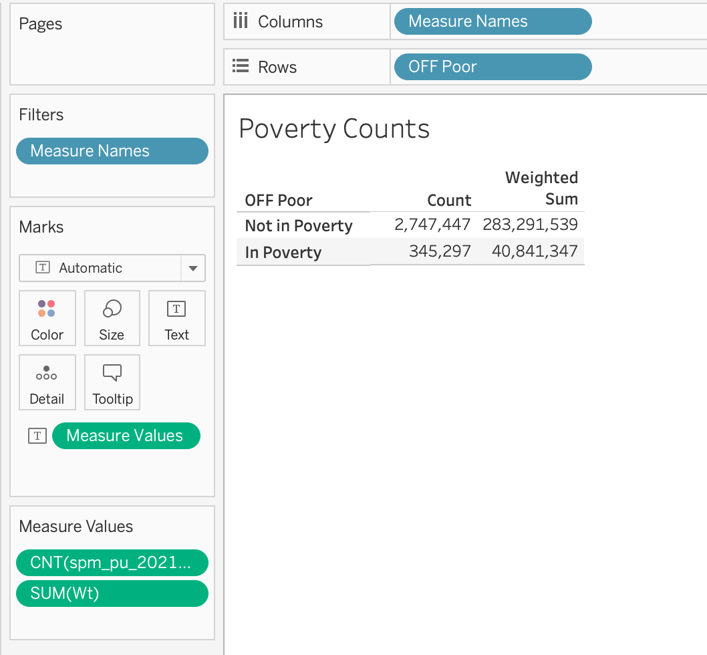
You can Edit Alias of the column names in your table to match my column names above.
Question
Create a new worksheet in Tableau called “Poverty Counts - Supplemental Poverty Measure”. Rename the worksheet tab to something similar. Repeat the steps above to create a table that shows both the survey counts and weighted sum for the SPM Poor indicator. With which definition of poverty is the weighted sum greater? Any guesses as to why?
Question
Create a new worksheet in Tableau called “SPM Poverty By Race” and rename the worksheet tab to something similar. Drag the Race variable to the Rows field, the SPM Poor variable to the Columns field, and the Wt variable to the label field. Ensure that the Wt field is being aggregated with SUM. Edit the aliases to display the correct Race labels from the data dictionary.
Table Calculations
When producing tables like this, we are often not just concerned with the total number of people in poverty in different social groups, but the percentage of people in poverty across different social groups. To adjust our tables to show this, we are going to use the Table Calculation features in Tableau.
Watch this video, which explains how to create table calculations and this video, which explains how to modify table calculations.
Question
Using the Quick Table Calculation feature, convert the sum in your “SPM Poverty By Race” table to percentages. Experiment with adjusting the value selected in “Compute Using…” What are the differences between the following three tables?
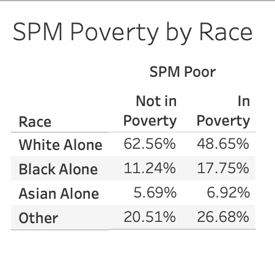 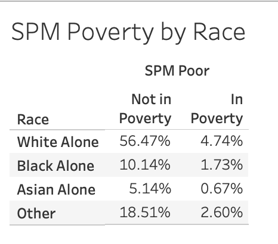 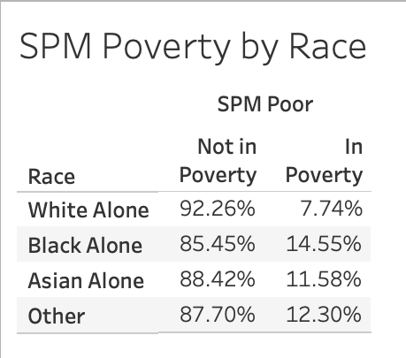 Which table would I use if I wanted to know which racial group has the highest percentage of individuals in poverty? Set “Compute Using…” accordingly.
Sorting
Often times, it can help us interpret tables and visualizations when rows, bars, etc. are ordered from largest to smallest. There are number of ways to re-sort your data visualizations in Tableau.
Watch this video on sorting in Tableau.
Question
Sort the “SPM Poverty By Race” table that you just created such that the racial group with the highest percentage of individuals in poverty appears at the top, and the group with the lowest percentage of individuals in poverty appears at the bottom.
Part 3: Reformatting to Do No Harm
This week you read examples of “data harm” curated by the Data Justice Lab. As we start designing tables and visualizations in Tableau, it is important to think about how we can minimize harm in our data design practices.
Watch this video, which details 10 “do no harm” recommendations from the Urban Institute.
Following this, watch this video which details some formatting features in Tableau.
Question
In the top right hand corner of the “SPM Poverty By Race” worksheet, click Show Me and select the icon with horizontal bars to convert the table that you just created to a bar chart.
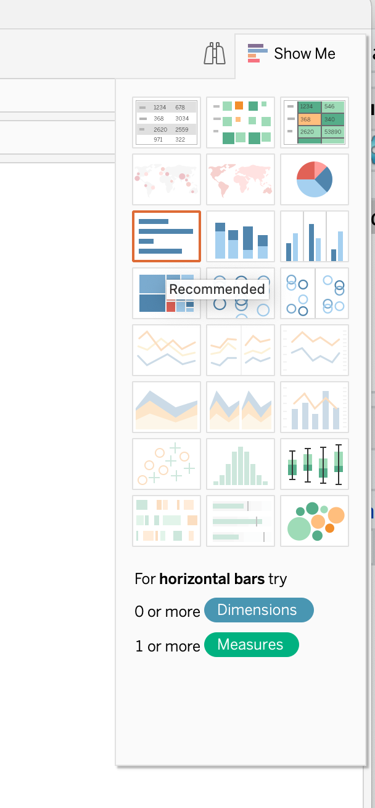 Right click “Not in Poverty” in your table and select “Hide”.
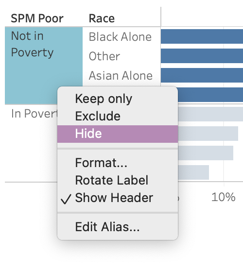 Using some of the formatting features that you just learned, identify and apply at least two techniques to minimize harm in the plot. You can also use skills that you learned earlier in this workshop.
Question
Create a new Worksheet called “SPM Poverty by Hispanic”, and rename the worksheet tab to something similar. Recreate “SPM Poverty by Race” but with the Hispanic variable.
First Half Submission
Create a New Dashboard in your workbook, and drag all four of your worksheets onto it in any order. Be sure to revisit checkpoint 1 if you can’t remember how to create a dashboard. In the top menu bar, click on Dashboard > Export Image, and then save an image of your dashboard as a .png file. Upload the image to Moodle under the Tableau Workshop assignment.
Part 4: Data Analysis Continued
Last week, we examined poverty status along single-axes of identity: race and ethnicity. In part 2, we are going to examine poverty status along multiple-axes of identity in order to demonstrate how individuals with overlapping minority identities can face heightened disadvantages.
In the following steps, we are going to be determining the average income and average access to government subsidies across different social groups. To do so, we are going to have to take into consideration the survey weights. We’re going to create a calculated field that calculates a weighted average of income. Calculated fields are variables that we create with customized formulas.
Question
Create a new Worksheet called “Average Income for Single Adult (Age 18-65) Households with Children, 2021”, and rename the worksheet tab to income_race_sex.
In the Data side panel, click on the downward black arrow > Create Calculated Field.
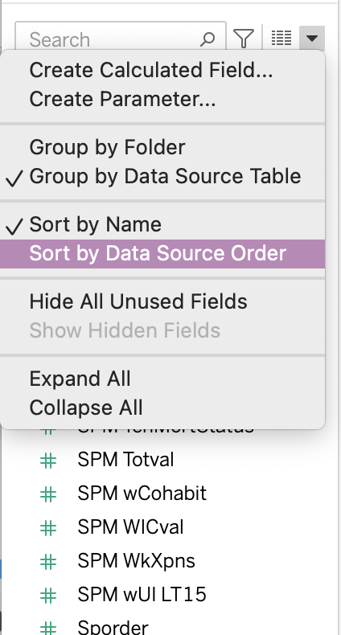 Name the field Weighted Totalval, and then enter the following formula into the text box:
SUM([Wt] * [SPM Totval]) / SUM([Wt])
As a class, we will talk through what this formula does. Click OK.
Question
Drag Age onto the Filters panel. Select “All Values,” and set the bounds to 18-65. Drag the SPM NumAdults to the Filters panel, and set the bounds to 1. Drag the SPM NumKids to the Filters panel, and set the bounds to at least 1.
Drag Race and Sex onto the Columns field, and drag Color onto the Color field. Drag Education and Weighted Totalval onto the Rows field.
Edit the Aliases for Sex and Education. Adjust the plot labels to something descriptive.
What do you notice about average income at the intersections of different racial and gender groups for single adult households with children?
Note how when we dragged Weighted Totalval onto the Rows field, the Measure was wrapped in the letters Agg(). This is Tableau’s way of communicating that this data has already been aggregated via the calculation we created. In other words, when we created the calculated field, we determined the weighted average across all the individual values for Totalval in the dataset; we aggregated the data across those values. By wrapping the Measure in Agg(), Tableau is telling us that it is not aggregating the values in the shelf and instead relying on the aggregated values calculated in the field.
Question
Duplicate the previous tab and rename it income_ethnicity_sex. Swap Race with Ethnicity.
What do you notice about average income at the intersections of different ethnic and gender groups for single adult households with children?
Question
Create a new calculated field called Subsidies. Set this field as follows:
[SPM EngVal] + [SPM CapHouseSub] + [SPM SchLunch] + [SPM SnapSub] + [SPM WICval]
Duplicate the the Weighted Totalval calculated field. Rename the duplicated field to Weighted Subsidies, and set the field as follows:
SUM([Wt] * [Subsidies]) / SUM([Wt])
Question
Duplicate the income_race_sex tab and rename it “Average Subsidies for Single Adult (Age 18-65) Households with Children, 2021” Also rename the tab. Swap Weighted Totalval with Weighted Subsidies.
Repeat these steps for the income_etc_sex tab.
What do you notice about average subsidies at the intersections of different ethnic and gender groups for single adult households with children?
Part 5: Reflection
How might we summarize what we just learned into a factual claim? What does this data contribute to narratives that prioritize equality over equity? What do we learn by taking an intersectional approach to data analysis that we can’t see otherwise?